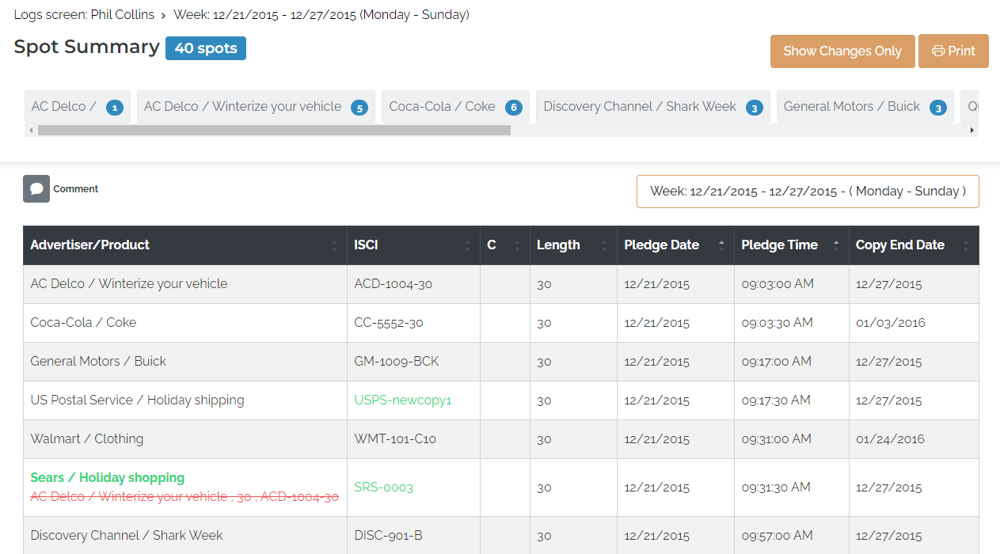
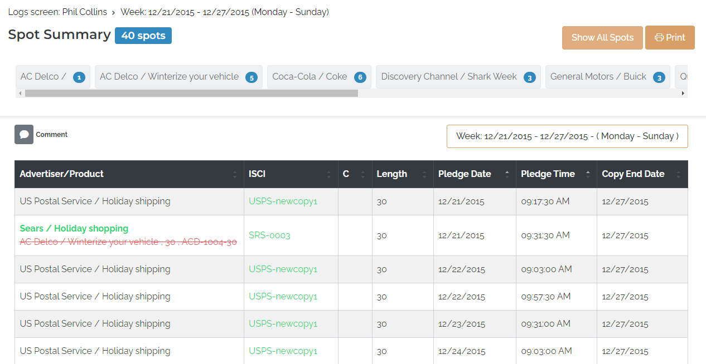

Color Coded Changes
When the "Enable color coded changes" System Setting is enabled and changes are made to a previously exported log that is then re-exported, the changes will be indicated using green and red color coding.
Added spots will appear in green (the advertiser, product, and ISCI code will use a green font). This is shown in the picture below, where a Sears spot was added on the pledge date of 12/21/15 with a pledge time of 9:31:30am.

Removed spots will appear in red with a strike-through (removed spots appear in the last position of the break, under the last spot, or in the case of an ROS agreement where the pledge times are all the same, under the last spot of the group of identical pledges). In the picture above, the AC Delco spot in red with a strike-through has been removed, replaced by the new Sears spot.
When copy is changed, the new ISCI code will be shown in green, as shown in the picture above for the US Postal Service spot at 9:17:30am.
This color coding only appears on the Logs/Audio page and the printed log, not on the web Affidavit page. Spots that have been removed will not count toward spot totals shown on the Spot Summary grid, and will not be shown on the web Affidavit page. With this feature, spots that have been moved within the same break when compared to a previous export will be shown in black, like any other spot. If a spot was on the first web log, and was moved to a different break or a different day, then re-exported, it will appear as removed from the original break, and added to the new break.
Show Changes Only/Show All Spots Button
When viewing a re-exported log with color-coded changes, by default, a "Show Changes Only" button is shown in the upper right corner.
When “Show Changes Only” is pressed, the spots will be filtered so that only added and removed spots and spots with changed copy will be shown. If the web log is printed at this time, only the changes are shown on the printed log. After “Show Changes Only” has been pressed, the button changes to a “Show All Spots” label. Press it to change back to the view that shows all spots.

If there are no changes to show, this button will not appear.
If there are spot changes as a result of using the “Unpost and/or Delete Spot utility” to clear spots, or because an agreement was terminated, removing the spots, and then re-exported, because the spots from the original export were cleared, there is nothing to compare the new spots to, therefore in cases like this, the color coding will not be shown.